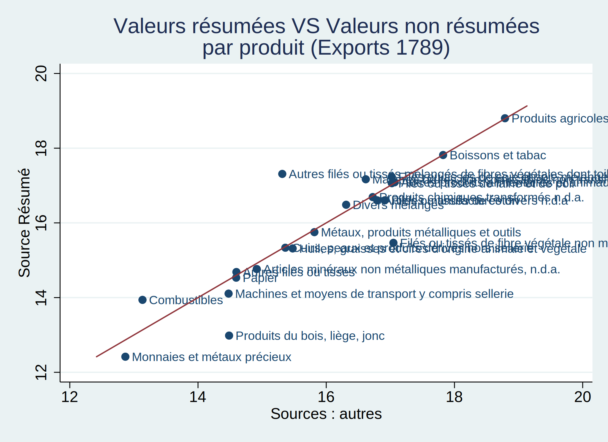
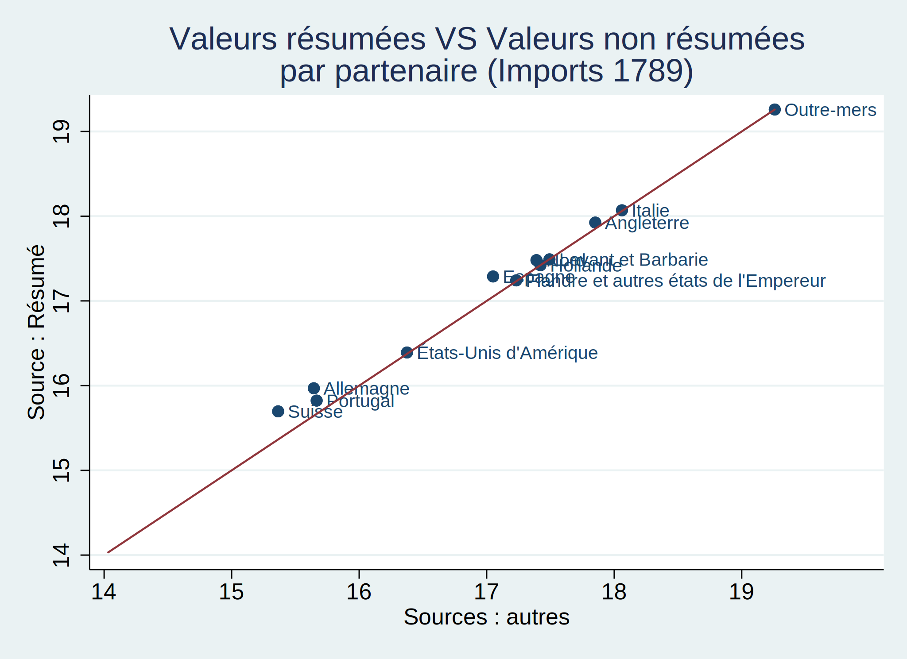
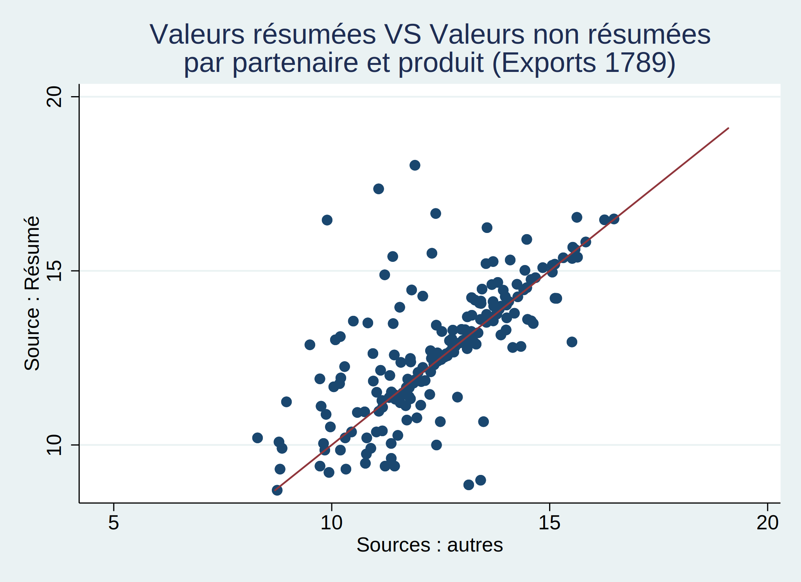

Nous disposons de différentes sources sur les données du commerce au XVIII ème siècle et nous essayons de tester leur robustesse en les comparant entre elles.
Nous tentons d’identifier quels sont les produits pour lesquels les valeurs des exportations/importations diffèrent d’une base de donnée à l’autre. Ceci va nous permettre d’identifier ainsi que de quantifier les erreurs dans la retranscriptions des données concernant la valeurs des exportations et des importations. Pour cela nous comparons les valeurs des exportations et des importations provenant d’une source résumée et celles provenant d’une source non résumées.
Nous nous intéressons uniquement aux observations de l’année 1789 et nous choisissons d’exclure les observations pour lesquels la France est un partenaire commercial.
Nous constatons que les différentes sources ne semblent pas concorder sur la valeur des importations de nombreux produits. Ceci est particulièrement vrai pour les “Monnaies et métaux précieux” ou encore pour les “Produits du bois, liège, jonc”.


Nous constatons que les différentes sources ne semblent pas concorder sur la valeur des importations de nombreux produits. Ceci est particulièrement vrai pour les “Monnaies et métaux précieux” ou encore pour les “Produits du bois, liège, jonc”.

>>>>>>> 6a34e8076b7ea470fa1ebd432d3b1bc761a488f8Malgré une légère amélioration par rapport aux importations, nous constatons que les différentes sources ne semblent pas concorder sur la valeur des exportations de nombreux produits. Ceci est particulièrement vrai pour les “Filés ou tissés de fibre végétale non mélangés” ou encore pour les “Autres filés ou tissés mélangés de fibre végétales dont toiles”.
Nous tentons d’identifier quels sont les partenaires commerciaux pour lesquels les valeurs des exportations/importations diffèrent d’une base de donnée à l’autre. Ceci va nous permettre d’identifier ainsi que de quantifier les erreurs dans la retranscriptions des données concernant la valeurs des exportations et par importations. Pour cela nous comparons les valeurs des exportations et des importations provenant d’une source résumée et celles provenant d’une source non résumées.
Nous nous intéressons uniquement aux observations de l’année 1789 et nous choisissons d’exclure les observations pour lesquels la France est un partenaire commercial. De plus, nous choisissons d’exclure les observations pour lesquels les produits importés sont des “Monnaies et métaux précieux” puisque ce type de bien ne peut être comptabilisé comme faisant parti des échanges commerciaux entre deux pays.

Nous constatons que les différentes sources ne semblent concorder sur la valeur des importations de nombreux partenaires commerciaux. Néanmoins les données concernant l’Espagne et l’Allemagne semblent être les moins fiables.


Nous constatons que les différentes sources ne semblent concorder sur la valeur des importations de nombreux partenaires commerciaux. Néanmoins les données concernant l’Espagne et l’Allemagne semblent être les moins fiables.

Nous constatons que les différentes sources ne semblent pas concorder sur la valeur des exportations de la plupart des partnaires commerciaux. Ceci est particulièrement vrai pour le Nord, la Hollande et la Flandre.
Nous tentons d’identifier quels sont les produits par partenaire commercial pour lesquels les valeurs des exportations/importations diffèrent d’une base de donnée à l’autre. Ceci va nous permettre d’identifier ainsi que de quantifier les erreurs dans la retranscriptions des données concernant la valeurs des exportés et importés. Pour cela nous comparons les valeurs des exportations et des importations provenant d’une source résumée et celles provenant d’une source non résumées.
Nous décidons de nous intéresser uniquement aux observations de l’année 1789 et nous choisissons d’exclure les observations pour lesquels la France est un partenaire commercial.


À présent nous calculons la différence entre les valeurs des produits par partenaire commercial provenant de la source : Résumé et des autres sources. Puis nous établissons un classement des produits par partenaire commercial pour lesquels la différence de valeurs entre les deux sources est la plus élevée.
=======
Représentation graphique concernant les exportations

Classement des produits par partenaire les moins fiables
À présent nous calculons la différence entre les valeurs des produits par partenaire commercial provenant de la source : Résumé et des autres sources. Puis nous établissons un classement des produits par partenaire commercial pour lesquels la différence de valeurs entre les deux sources est la plus élevée.
Classement des 10 produits par partenaire commercial pour lesquels la différence des log des valeurs entre les deux sources est la plus importante
. list diff_value_log part_x_prod in 1/10
+-----------------------------------------------------+
| diff_v~g part_x_prod |
|-----------------------------------------------------|
- | 6.56 0b Flandre et autres états de l’Empereur |
- | 6.28 0b Hollande |
- | 6.12 0b Nord |
- | 5.14 9b Levant et Barbarie |
- | 5.10 6i Allemagne | |—————————————————–|
- | 4.26 0b Italie |
- | 4.13 6h Italie |
- | 4.01 0b Suisse |
- | 3.83 6i Suisse |
- | 3.81 6a Allemagne | +—————————————————–+
Classement des 10 produits par partenaire commercial pour lesquels la différence des log des valeurs en valeur absolue entre les deux sources est la plus importante
product_sitc~R partner_grou~g export~t diff_value
1. Matières bru.. Levant et Ba.. Imports 10,714,049
2. Matières bru.. Angleterre Exports 10,530,236
3. Autres filés.. Angleterre Imports 9,739,391
4. Filés ou tis.. Allemagne Exports 9,108,392
5. Filés ou tis.. Flandre et a.. Imports -7,308,206
6. Autres filés.. Flandre et a.. Imports 7,078,986
7. Autres filés.. Espagne Exports 6,135,500
8. Filés ou tis.. Angleterre Imports -6,064,620
9. Matières bru.. Nord Imports 5,105,064
10. Filés ou tis.. Espagne Exports -5,027,228
11. Matières bru.. Italie Imports 5,004,275
12. Filés ou tis.. Italie Imports -4,585,759
13. Filés ou tis.. Levant et Ba.. Imports -4,335,740
14. Produits du .. Nord Imports -3,648,811
15. Matières bru.. Espagne Exports 3,373,778
16. Matières bru.. Suisse Exports 3,266,736
17. Produits chi.. Nord Exports 3,145,411
18. Autres filés.. Angleterre Exports 2,843,710
19. Boissons et .. Angleterre Exports 2,651,147
20. Filés ou tis.. Espagne Exports -2,361,733
>>>>>>> 6a34e8076b7ea470fa1ebd432d3b1bc761a488f8
<<<<<<< HEAD
Produits Partenaires X_ou_M Différ~g
1. 0b Flandre et a.. Exports 6.56
2. 6i Suisse Imports 6.38
3. 0b Hollande Exports 6.28
4. 0b Nord Exports 6.12
5. 9b Levant et Ba.. Imports 5.14
6. 6i Allemagne Imports 5.10
7. 6b Nord Imports -4.55
8. 6d Hollande Exports -4.43
9. 6d Allemagne Exports -4.29
10. 0b Italie Exports 4.26
11. 6h Italie Imports 4.13
12. 0b Suisse Exports 4.01
13. 6i Hollande Exports 3.99
14. 6a Allemagne Imports 3.81
15. 6h Espagne Imports 3.71
16. 6h Angleterre Exports 3.67
17. 0b Angleterre Exports 3.38
18. 9b Suisse Imports 3.37
19. 0b Levant et Ba.. Exports 3.21
20. 1 Portugal Imports 3.19
#### Classement des 10 produits par partenaire commercial pour lesquels la différence des log des valeurs en valeur absolue entre les deux sources est la plus importante
Produits Partenaires X_ou_M Différence Différ~g
- 0b Nord Exports 67,707,408.00 6.12
- 0b Hollande Exports 34,370,376.00 6.28
- 0b Italie Exports 16,728,494.00 4.26
- 0b Flandre et a.. Exports 14,032,177.00 6.56
- 2 Levant et Ba.. Imports 10,714,049.00 0.57
- 2 Angleterre Exports 10,530,236.00 2.68
- 6i Angleterre Imports 9,739,391.00 3.12
- 6f Allemagne Exports 9,108,392.00 0.91
- 6d Flandre et a.. Imports -7,308,206.00 -1.65
- 6h Flandre et a.. Imports 7,015,482.00 1.53
- 6h Espagne Exports 6,135,500.50 1.43
- 6g Angleterre Imports -6,057,200.00 -1.18
- 0b Levant et Ba.. Exports 5,197,485.50 3.21
- 2 Nord Imports 5,105,064.00 0.57
- 6d Espagne Exports -5,027,228.00 -2.55
- 2 Italie Imports 5,004,275.00 0.20
- 0b Suisse Exports 4,844,689.00 4.01
- 6f Italie Imports -4,585,759.00 -1.90
- 6g Levant et Ba.. Imports -4,335,740.00 -1.57
- 6b Nord Imports -3,648,126.75 -4.55
=======